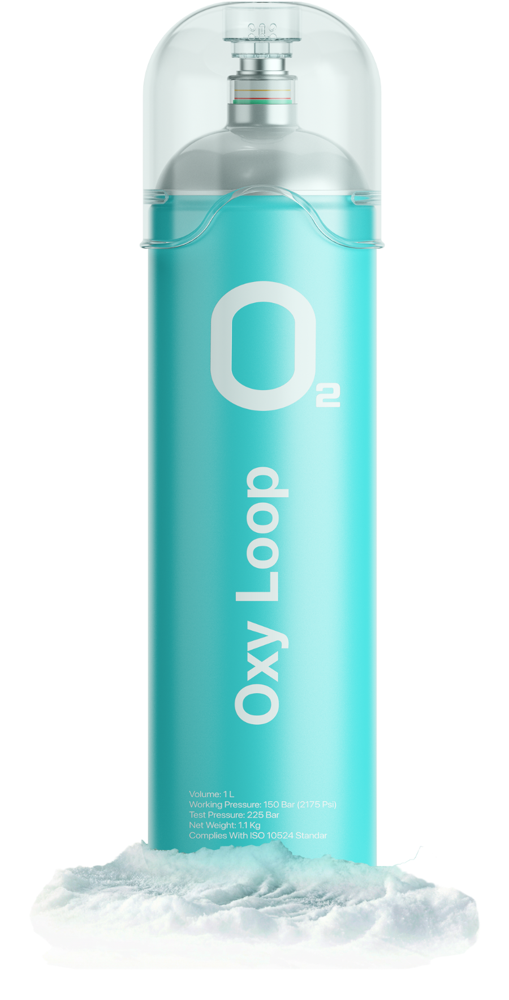
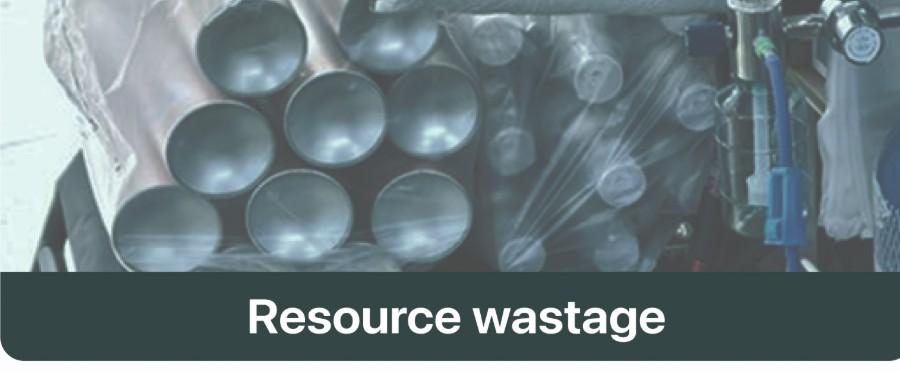
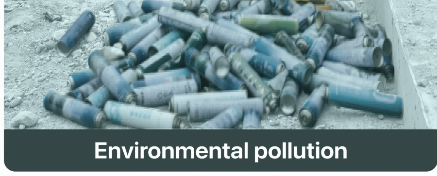
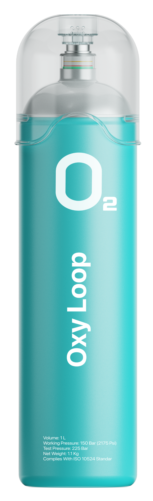
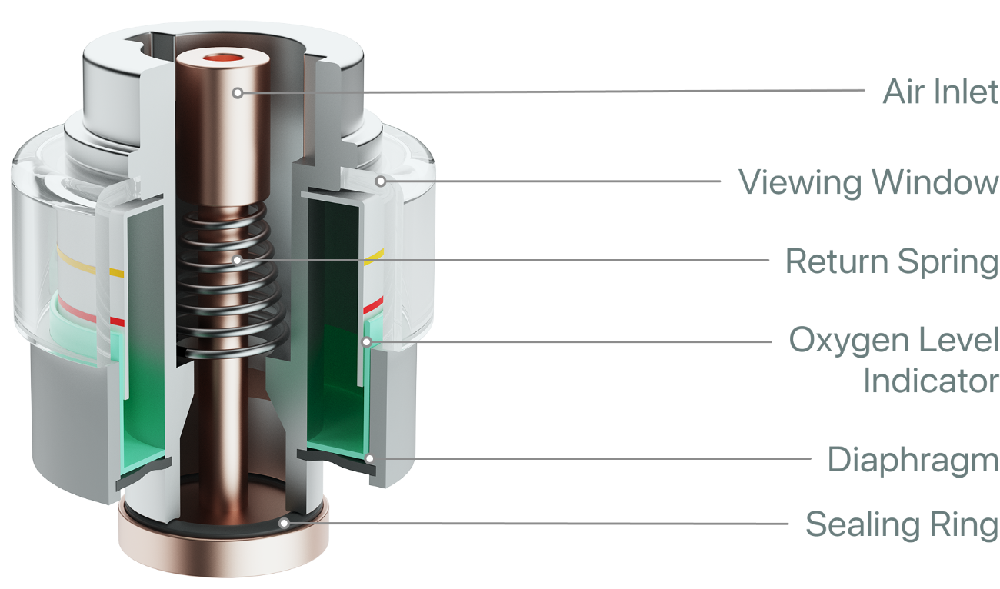
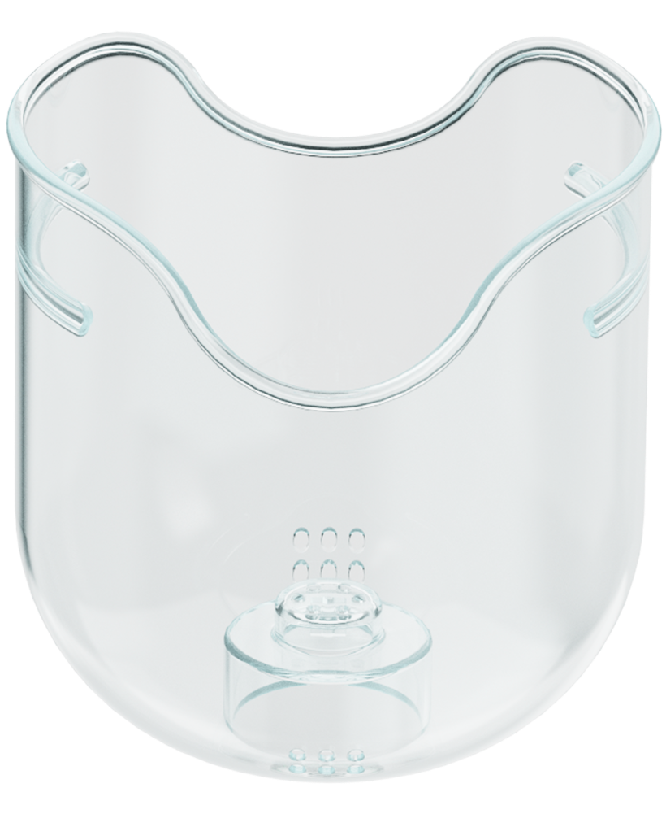
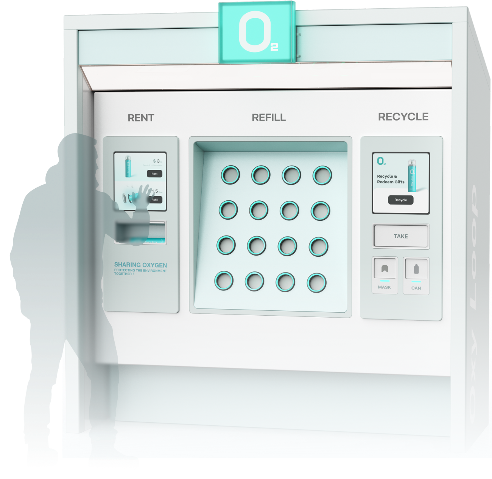

Oxy Loop
Reusable oxygen for high-altitude travel — rented, refilled, recycled and rewarded at public stations, so a single breath never becomes single-use waste.

At altitude, a single breath leaves a lasting trace.
High-altitude travel runs on single-use oxygen cans. Each climber empties several, then discards them — turning remote, fragile plateaus into fields of metal litter that cannot easily be carried back out.

Disposable canisters are used once and thrown away — manufacturing and metal lost with every breath.

At altitude there is no collection. Empty cans accumulate where they fall, scarring protected environments.
Turn a disposable product into a circular service.
Instead of selling cans, Oxy Loop runs public stations where one reusable canister keeps moving through four steps — never leaving the loop, never leaving the mountain.
A reusable canister built to be refilled, not thrown away.
Translucent, light, and durable — the Oxy Loop canister carries the same friendly oxygen clarity as the brand, with a recoverable mask and a refill valve designed for station service.


An internal pressure vessel designed to be topped up at the station — the body stays in service for life.

The mask detaches and drops into the recycling chute — later remade into souvenirs.

Public Rent · Refill · Recycle bays with large tap targets for quick use at altitude.
Walk the whole loop — the real interface, step by step.
Every screen below is the actual Oxy Loop mini-program and station UI. Click a phase, step through with the arrows, and at the recycling station, tap the slot to drop your item in — just like the real flow.
Find a nearby station
Open the mini-program and locate the closest plateau oxygen station.
Every breath stays in circulation, not on the mountain.
By renting and refilling one durable canister — and recovering its mask and bottle at the station — Oxy Loop replaces a stream of discarded cans with a single object that keeps coming back. The plastic travelers return is reborn as the souvenir they take home.